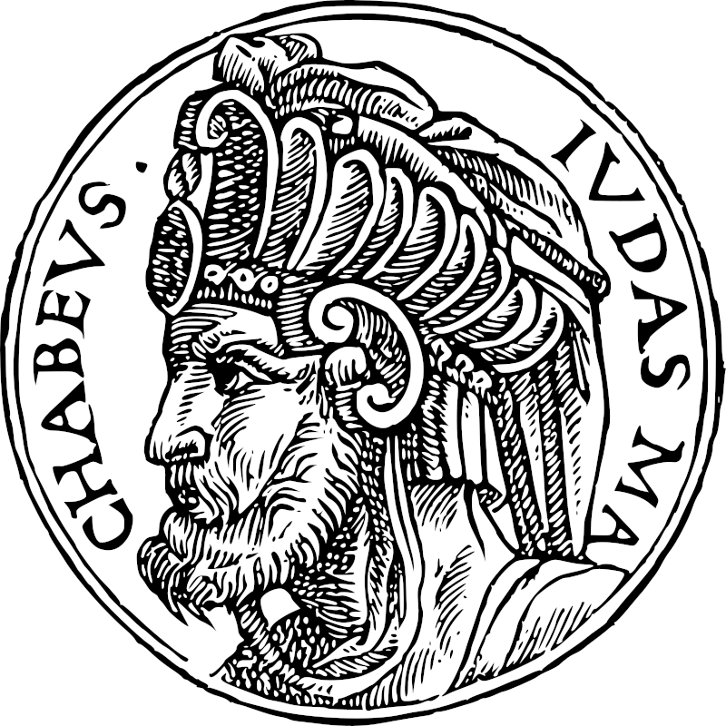

Secundum Matthaeum X.XIX-XX
ὅταν δὲ παραδῶσιν ὑμᾶς, μὴ μεριμνήσητε πῶς ἢ τί λαλήσητε· δοθήσεται γὰρ ὑμῖν ἐν ἐκείνῃ τῇ ὥρᾳ τί λαλήσητε· οὐ γὰρ ὑμεῖς ἐστε οἱ λαλοῦντες ἀλλὰ τὸ πνεῦμα τοῦ πατρὸς ὑμῶν τὸ λαλοῦν ἐν ὑμῖν.
Cum autem tradent vos nolite cogitare quomod o aut quid loquamini dabitur enim vobis in illa hora quid loquamini, non enim vos estis qui loquimini sed Spiritus Patris vestri qui loquitur in vobis
Когда же будут предавать вас, не заботьтесь, как или что сказать; ибо в тот час дано будет вам, что сказать, ибо не вы будете говорить, но Дух Отца вашего будет говорить в вас.
Secundum Lucam XII.II-V
Οὐδὲν δὲ συγκεκαλυμμένον ἐστὶν ὃ οὐκ ἀποκαλυφθήσεται, καὶ κρυπτὸν ὃ οὐ γνωσθήσεται. ἀνθ' ὧν ὅσα ἐν τῇ σκοτίᾳ εἴπατε ἐν τῷ φωτὶ ἀκουσθήσεται, καὶ ὃ πρὸς τὸ οὖς ἐλαλήσατε ἐν τοῖς ταμείοις κηρυχθήσεται ἐπὶ τῶν δωμάτων. Λέγω δὲ ὑμῖν τοῖς φίλοις μου, μὴ φοβηθῆτε ἀπὸ τῶν ἀποκτεινόντων τὸ σῶμα καὶ μετὰ ταῦτα μὴ ἐχόντων περισσότερόν τι ποιῆσαι. ὑποδείξω δὲ ὑμῖν τίνα φοβηθῆτε· φοβήθητε τὸν μετὰ τὸ ἀποκτεῖναι ἔχοντα ἐξουσίαν ἐμβαλεῖν εἰς τὴν γέενναν· ναί, λέγω ὑμῖν, τοῦτον φοβήθητε.
Nihil autem opertum est quod non reveletur neque absconditum quod non sciatur quoniam quae in tenebris dixistis in lumine dicentur et quod in aurem locuti estis in cubiculis praedicabitur in tectis dico autem vobis amicis meis ne terreamini ab his qui occidunt corpus et post haec non habent amplius quod faciant ostendam autem vobis quem timeatis timete eum qui postquam occiderit habet potestatem mittere in gehennam ita dico vobis hunc timete
Нет ничего сокровенного, что не открылось бы, и тайного, чего не узнали бы. Посему, что́ вы сказали в темноте, то́ услышится во свете; и что́ говорили на ухо внутри дома, то́ будет провозглашено на кровлях. Говорю же вам, друзьям Моим: не бойтесь убивающих тело и потом не могущих ничего более сделать; но скажу вам, кого бояться: бойтесь того, кто, по убиении, может ввергнуть в геенну: ей, говорю вам, того бойтесь.
Archive
November 2024
September 2024
- Synopsis — Euthyphro
- Authors to read for learning classical rhetoric
- Morphology of Philosophical Texts
- Anaximandros
- Thales
- Pherecydes
Writings before 2022
- Excellent Bits of Advice from Georg Lichtenberg (February 2021)
- A Draft of Basic Philosophy (December 2020)
- A Digest of Alcibiades Majo (December 2020)r
- On the Progymnasmatic Method (April 2020)
- Summary: Immanuel Kant – What is Enlightenment (August 2018)